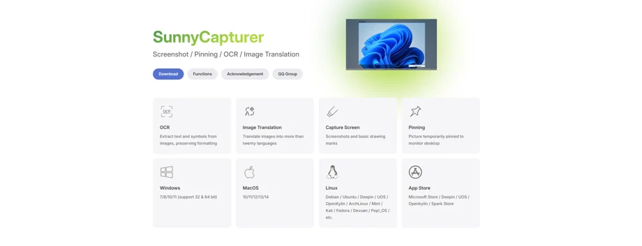

SunnyCapturer · 2025–2026
谢谢你，
让它走得更远。
从截图、贴图，到 OCR、录屏和 GIF，SunnyCapturer 的很多改进都来自用户的一句话。谢谢每一位试用、反馈和参与翻译的人。
SunnyCapturer 已进入归档。Windows 用户推荐使用持续更新的 SnipArc。

SunnyCapturer · 2025–2026
从截图、贴图，到 OCR、录屏和 GIF，SunnyCapturer 的很多改进都来自用户的一句话。谢谢每一位试用、反馈和参与翻译的人。
SunnyCapturer 已进入归档。Windows 用户推荐使用持续更新的 SnipArc。
